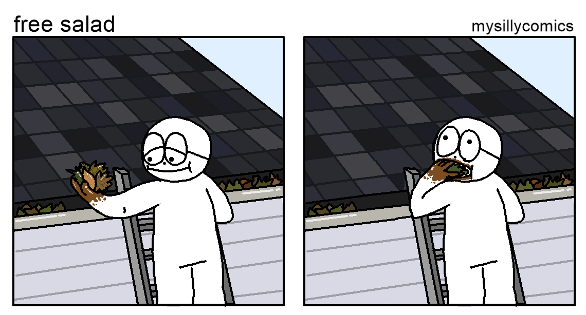

Part of our planned deliverables for the class, other than the games themselves, are new collective processes for making games. To that end, we plan to try out a few different processes. The idea is to try out a process in micro every week.
For our first attempt, we are going to:
We also have this idea of "haunting" someone else's work-in-progress, which we left pretty vague and I will intentionally not describe further :)
Miro has this functionality that lets you see where each other's cursors are in real-time. We grouped our cursors together in more or less the center of the image cloud, and tried to keep our cursors on top of each other.
The cursors naturally drifted in one direction. Nudged southeasterly by the spirits, we collectively crawled until we reached the edge of the word cloud. We picked the last image that we passed over (before we all fell off the edge of the world of images) which was:
